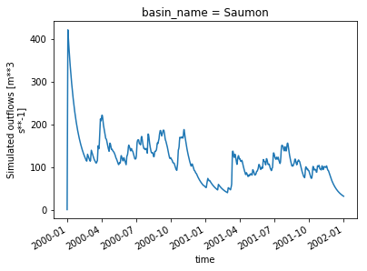
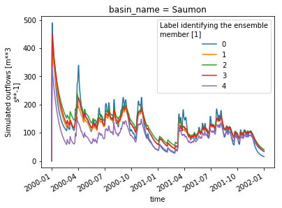

Calling HMETS on the Raven server¶
Here we use birdy’s WPS client to launch the HMETS hydrological model on the server and analyze the output.
[4]:
from birdy import WPSClient
from example_data import TESTDATA
import datetime as dt
from urllib.request import urlretrieve
import xarray as xr
import numpy as np
from matplotlib import pyplot as plt
import json
url = "http://localhost:9099/wps"
wps = WPSClient(url,progress=True)
[5]:
# Get the documentation for the method's usage:
help(wps.regionalisation)
Help on method regionalisation in module birdy.client.base:
regionalisation(ts, properties, latitude, longitude, model_name=None, elevation=None, start_date=datetime.datetime(1, 1, 1, 0, 0), end_date=datetime.datetime(1, 1, 1, 0, 0), name='watershed', ndonors=5, min_nse=0.6, method='SP_IDW', area=None) method of birdy.client.base.WPSClient instance
Compute the hydrograph for an ungauged catchment using a regionalization method.
Parameters
----------
ts : ComplexData:mimetype:`application/x-netcdf`, :mimetype:`text/plain`, :mimetype:`application/x-zipped-shp`
Files (text or netCDF) storingdaily liquid precipitation (pr), solid precipitation (prsn), minimum temperature (tasmin), maximum temperature (tasmax), potential evapotranspiration (evspsbl) and observed streamflow (qobs [m3/s]).
start_date : //www.w3.org/TR/xmlschema-2/#dateTime
Start date of the simulation (AAAA-MM-DD). Defaults to the start of the forcing file.
end_date : //www.w3.org/TR/xmlschema-2/#dateTime
End date of the simulation (AAAA-MM-DD). Defaults to the end of the forcing file.
latitude : //www.w3.org/TR/xmlschema-2/#float
Watershed's centroid latitude
longitude : //www.w3.org/TR/xmlschema-2/#float
Watershed's centroid longitude
name : //www.w3.org/TR/xmlschema-2/#string
The name of the watershed the model is run for.
model_name : {'HMETS', 'GR4JCN', 'MOHYSE'}//www.w3.org/TR/xmlschema-2/#string
Hydrological model identifier: {HMETS, GR4JCN, MOHYSE}
ndonors : //www.w3.org/TR/xmlschema-2/#integer
Number of close or similar catchments to use to generate the representative hydrograph at the ungauged site.
min_nse : //www.w3.org/TR/xmlschema-2/#float
Minimum calibration NSE value required to be considered in the regionalization.
method : {'MLR', 'SP', 'PS', 'SP_IDW', 'PS_IDW', 'SP_IDW_RA', 'PS_IDW_RA'}//www.w3.org/TR/xmlschema-2/#string
Regionalisation method to use, one of MLR, SP, PS, SP_IDW,
PS_IDW, SP_IDW_RA, PS_IDW_RA.
The available regionalization methods are:
Multiple linear regression (MLR)
Ungauged catchment parameters are estimated individually by a linear regression
against catchment properties.
Spatial proximity (SP)
The ungauged hydrograph is an average of the `n` closest catchments' hydrographs.
Physical similarity (PS)
The ungauged hydrograph is an average of the `n` most similar catchments' hydrographs.
Spatial proximity with inverse distance weighting (SP_IDW)
The ungauged hydrograph is an average of the `n` closest catchments' hydrographs, but
the average is weighted using inverse distance weighting
Physical similarity with inverse distance weighting (PS_IDW)
The ungauged hydrograph is an average of the `n` most similar catchments' hydrographs, but
the average is weighted using inverse distance weighting
Spatial proximity with IDW and regression-based augmentation (SP_IDW_RA)
The ungauged hydrograph is an average of the `n` closest catchments' hydrographs, but
the average is weighted using inverse distance weighting. Furthermore, the method uses the CANOPEX/USGS
dataset to estimate model parameters using Multiple Linear Regression. Parameters whose regression r-squared
is higher than 0.5 are replaced by the MLR-estimated value.
Physical Similarity with IDW and regression-based augmentation (PS_IDW_RA)
The ungauged hydrograph is an average of the `n` most similar catchments' hydrographs, but
the average is weighted using inverse distance weighting. Furthermore, the method uses the CANOPEX/USGS
dataset to estimate model parameters using Multiple Linear Regression. Parameters whose regression r-squared
is higher than 0.5 are replaced by the MLR-estimated value.
properties : ComplexData:mimetype:`application/json`
json string storing dictionary of properties. The available properties are: area (km2), longitude (dec.degrees), latitude (dec. degrees), gravelius, perimeter (m), elevation (m), slope(%), aspect, forest (%), grass (%), wetland (%), water (%), urban (%), shrubs (%), crops (%) and snowIce (%).
area : //www.w3.org/TR/xmlschema-2/#float
Watershed area (km2)
elevation : //www.w3.org/TR/xmlschema-2/#float
Watershed's mean elevation (m)
Returns
-------
hydrograph : ComplexData:mimetype:`application/x-netcdf`, :mimetype:`application/zip`
A netCDF file containing the outflow hydrographs (in m3/s) for all subbasins specified as `gauged` in the .rvh file. It reports period-ending time-averaged flows for the preceding time step, as is consistent with most measured stream gauge data (again, the initial flow conditions at the start of the first time step are included). If observed hydrographs are specified, they will be output adjacent to the corresponding modelled hydrograph.
ensemble : ComplexData:mimetype:`application/x-netcdf`
A netCDF file containing the outflow hydrographs (in m3/s) for the basin on which the regionalization method has been applied. The number of outflow hydrographs is equal to the number of donors (ndonors) passed to the method. The average of these hydrographs (either using equal or Inverse-Distance Weights) is the hydrograph generated in "hydrograph".
[6]:
# Forcing files. This file should only contain weather data (tmin, tmax, rain, snow, pet (if desired), etc.
# No streamflow is required. This is a link to a string, but you can submit a string to your netcdf file directly.
ts = str(TESTDATA['raven-hmets-nc-ts'])
# Model configuration parameters
config = dict(
start_date=dt.datetime(2000, 1, 1),
end_date=dt.datetime(2002, 1, 1),
area=4250.6,
name='Saumon',
elevation=843.0,
latitude=54.4848,
longitude=-123.3659,
method='PS', # One of the methods described above
model_name='HMETS', # One of the two models are allowed: HMETS and GR4JCN
min_nse=0.7, # Minimumcalibration NSE required to be considered a donor (for selecting good donor catchments)
ndonors=5, # Number of donors we want to use. Usually between 4 and 8 is a robust number.
properties=json.dumps({'latitude':54.4848, 'longitude':-123.3659, 'forest':0.4}),
)
# Let's call the model with the timeseries, model parameters and other configuration parameters
resp = wps.regionalisation(ts=ts, **config)
[7]:
# And get the response
# With `asobj` set to False, only the reference to the output is returned in the response.
# Setting `asobj` to True will retrieve the actual files and copy the locally.
[hydrograph, ensemble] = resp.get(asobj=True)
The hydrograph and ensemble outputs are netCDF files storing the time series. These files are opened by default using xarray, which provides convenient and powerful time series analysis and plotting tools.
[8]:
hydrograph.q_sim
[8]:
<xarray.DataArray 'q_sim' (time: 732, nbasins: 1)>
array([[ 0. ],
[214.946219],
[421.947247],
...,
[ 32.548253],
[ 31.946426],
[ 31.368655]])
Coordinates:
* time (time) datetime64[ns] 2000-01-01 2000-01-02 ... 2002-01-01
basin_name (nbasins) object ...
Dimensions without coordinates: nbasins
Attributes:
units: m**3 s**-1
long_name: Simulated outflows
[9]:
hydrograph.q_sim.plot()
/home/ets/miniconda3/lib/python3.7/site-packages/pandas/plotting/_converter.py:129: FutureWarning: Using an implicitly registered datetime converter for a matplotlib plotting method. The converter was registered by pandas on import. Future versions of pandas will require you to explicitly register matplotlib converters.
To register the converters:
>>> from pandas.plotting import register_matplotlib_converters
>>> register_matplotlib_converters()
warnings.warn(msg, FutureWarning)
[9]:
[<matplotlib.lines.Line2D at 0x7f8bbdeffb38>]

[10]:
print("Max: ", hydrograph.q_sim.max())
print("Mean: ", hydrograph.q_sim.mean())
print("Monthly means: ", hydrograph.q_sim.groupby('time.month').mean())
Max: <xarray.DataArray 'q_sim' ()>
array(421.947247)
Mean: <xarray.DataArray 'q_sim' ()>
array(117.683712)
Monthly means: <xarray.DataArray 'q_sim' (month: 12)>
array([159.124617, 92.227572, 116.875393, 131.507106, 105.840308, 119.197397,
139.983849, 134.138526, 128.881682, 109.17058 , 114.484513, 58.80445 ])
Coordinates:
* month (month) int64 1 2 3 4 5 6 7 8 9 10 11 12
/home/ets/miniconda3/lib/python3.7/site-packages/xarray/core/groupby.py:639: FutureWarning: Default reduction dimension will be changed to the grouped dimension in a future version of xarray. To silence this warning, pass dim=xarray.ALL_DIMS explicitly.
skipna=skipna, allow_lazy=True, **kwargs)
Now we can also see the results coming from the 5 donors using the ‘ensemble’ variable¶
[11]:
# Plot the simulations from the 5 donor parameter sets
ensemble.q_sim.isel(nbasins=0).plot.line(hue='realization')
[11]:
[<matplotlib.lines.Line2D at 0x7f8bbc4e4e10>,
<matplotlib.lines.Line2D at 0x7f8bbc4af7f0>,
<matplotlib.lines.Line2D at 0x7f8bbc4af978>,
<matplotlib.lines.Line2D at 0x7f8bbc4afac8>,
<matplotlib.lines.Line2D at 0x7f8bbc4afc18>]

[ ]: